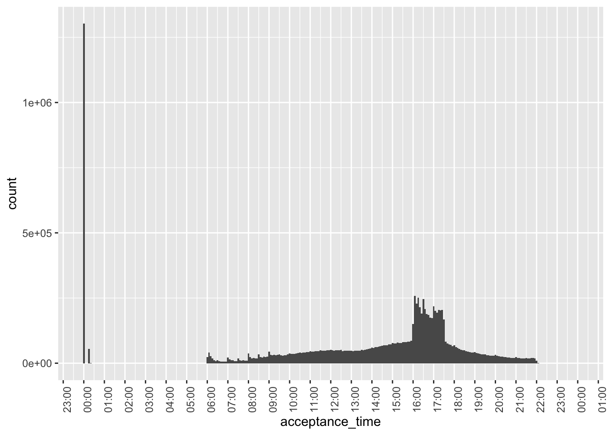
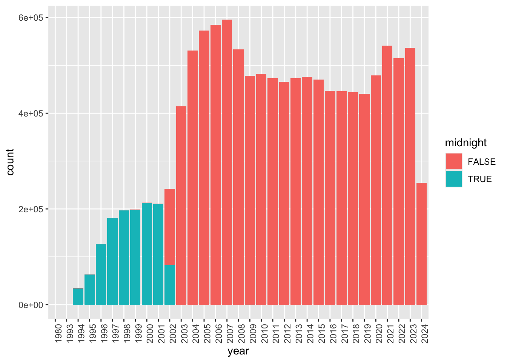
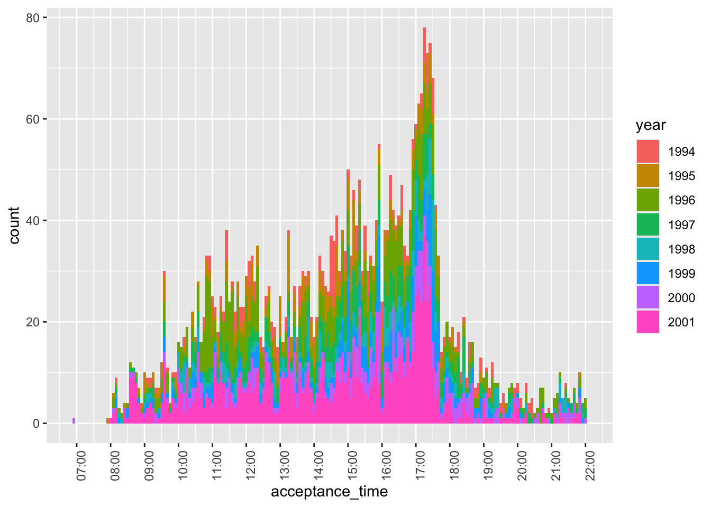
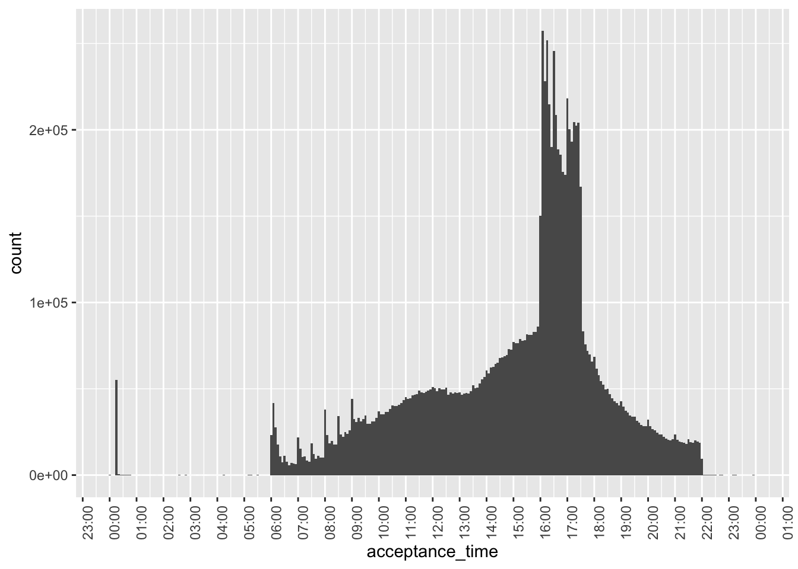
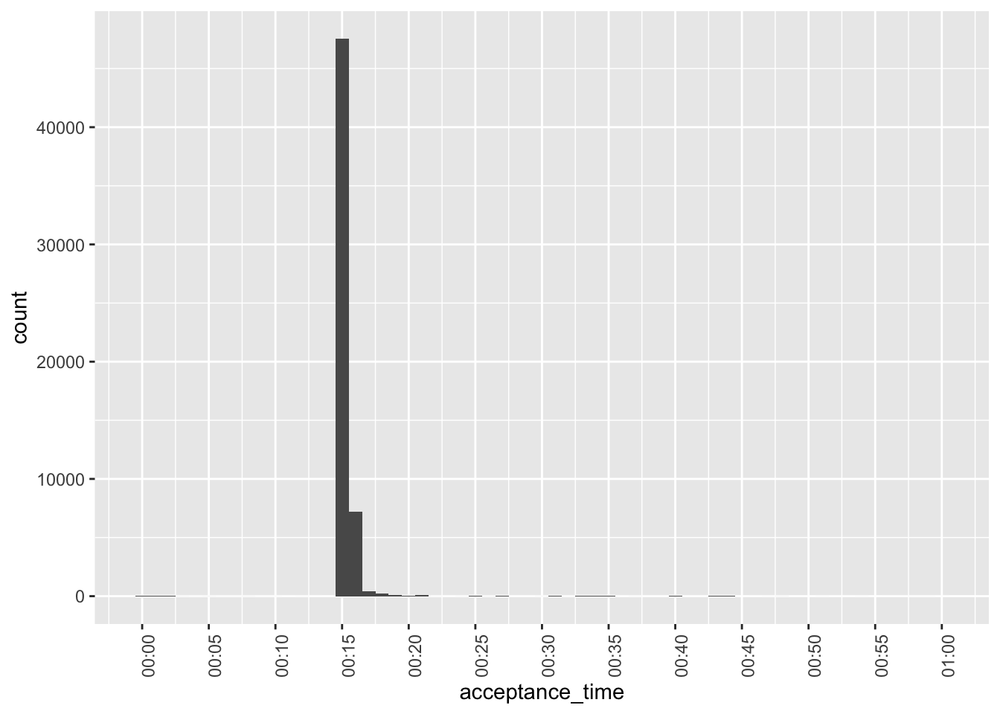
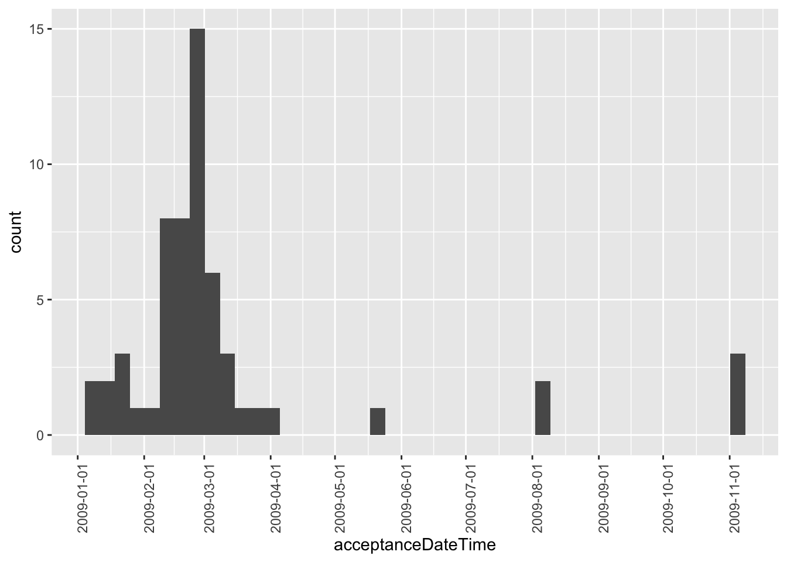
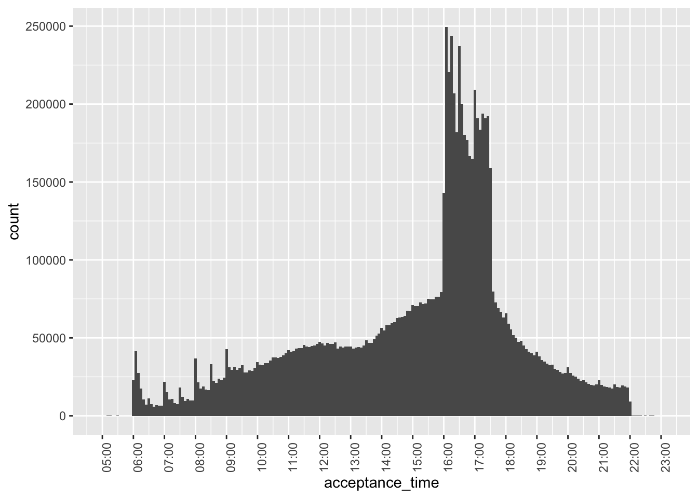
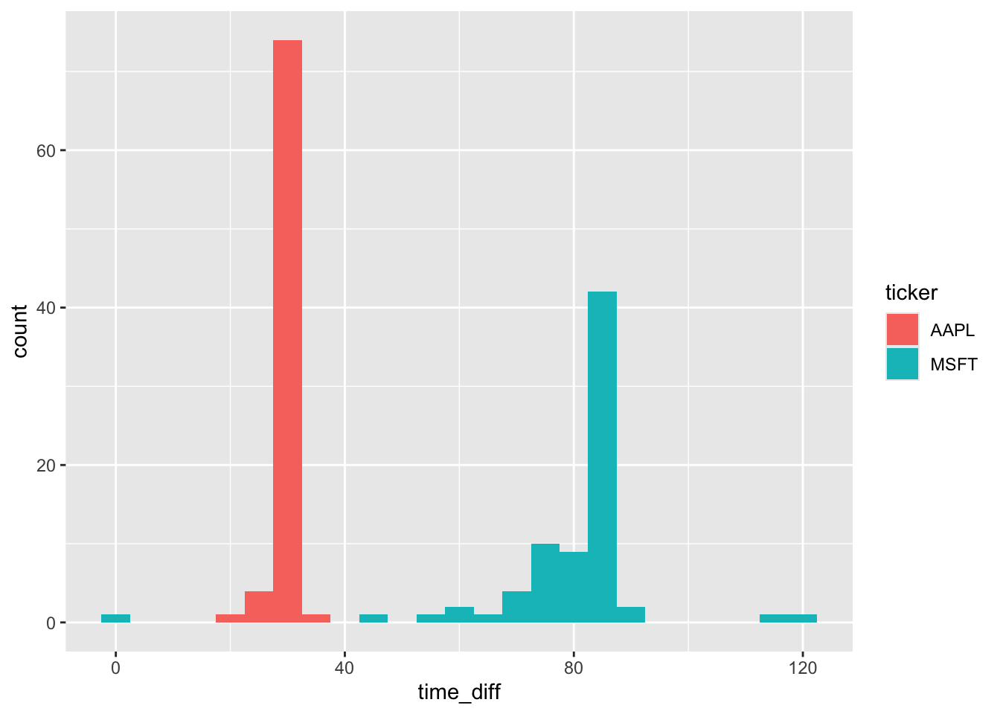

library(tidyverse)
library(DBI)
library(farr)
library(scales)Working with date and times
Datetimes
DuckDB
The purpose of this note is address the topic of temporal data (dates and times) in more detail than found in the “Dates and Times” chapter of R for Data Science (Wickham et al., 2023) and to provide a hands-on application of working with them. The application I work with is based on the SEC submissions data I discussed in another recent note. I study this application not only using R, but also DuckDB and PostgreSQL, as moving data between systems can be a pain point, especially with date-times.
As discussed in a recent post on LinkedIn, one goal of Empirical Research in Accounting: Tools and Methods (Gow and Ding, 2024) is to provide a pathway to mastery of the contents of Wickham et al. (2023).1 That said, I identified a few gaps, including spreadsheets, hierarchical data, and dates and times. One recent note covered hierarchical data and a forthcoming note will address spreadsheets.
The purpose of this note is address the gap regarding dates and times in more detail—including a hands-on application—than found in the “Dates and Times” chapter of Wickham et al. (2023). The application I work with is based on the SEC submissions data I discussed in another recent note. I study this application not only using R, but also DuckDB and PostgreSQL, as moving data between systems can be a pain point, especially with date-times.
In writing this note, I use the packages listed below.2 This note was written using Quarto and compiled with RStudio, an integrated development environment (IDE) for working with R. The source code for this note is available here.
Dates and times: The basics
Chapter 17 of Wickham et al. (2023) identifies three data types related to dates and times:
- dates are specified as a year, month, and day
- times identify times within a day
- date-times combine dates and times into a single data type
Like R for Data Science, I concentrate on dates and date-times.3
Dates
In some respects, dates are relatively straightforward. A constant bane of data analysts is the representation of dates in ambiguous formats. For example, in many parts of the world "11/12/2023" represents 11 December 2023; in other parts of the world (read “the United States of America”), "11/12/2023" represents November 12, 2023. Converting string representations of dates to dates is an important element of the data curation process.4 R for Data Science provides an excellent discussion of issues that arise in converting string data to dates (Wickham et al., 2023, pp. 296–302).
We might also encounter dates in data sets from other programs, such as SAS, Stata, or Excel. Functions such as read_sas(), read_stata(), and read_excel() will generally detect and convert dates. Otherwise exporting data from those programs to text with dates represented in an unambiguous text format is perhaps the best approach. For example, in my wrds2pg Python package, I apply SAS code that uses format=YYMMDD10. to represent dates using the ISO 8601 format discussed in R for Data Science before exporting to CSV using SAS’s PROC EXPORT command.5
Dates are generally transferred without any issues from databases such as DuckDB or PostgreSQL to R or vice versa. Once properly encoded as type Date, dates do not present particular difficulties in R in many contexts. The as.Date() function converts an ISO 8601 string to a date (i.e., an object with class class Date in R):
a_date <- as.Date("2024-05-28")
class(a_date)[1] "Date"Functions provided by the lubridate package (part of the core Tidyverse) allow us to extract information about dates, such as the year …
year(a_date)[1] 2024… the month (as a number) …
month(a_date)[1] 5… and the month (as a word in the relevant locale; I’m using English).
month(a_date, label = TRUE)[1] May
12 Levels: Jan < Feb < Mar < Apr < May < Jun < Jul < Aug < Sep < ... < DecMuch of the complexity surrounding dates and times arises from the existence of time zones. It is important to note that one does not completely avoid this complexity with dates. For example, the date 2024-06-28 in the America/New_York time zone will include points of time that are associated with the date 2024-06-29 in the Australia/Sydney time zone. So if a date-time related to Australia is converted to a date based on UTC or America/New_York, then it may end up on a different date that would result if converted to a date using Australia/Melbourne.
Another aspect of dates that is easy to overlook is that some things that seem simple turn out to be complicated when examined more closely. For example, what date is one month after 2024-01-31? Also, what date is one year after 2024-02-29? Note that R will return NA as the answer to each of these questions.6
Date-times
A date-time, also known as a timestamp, combines a date with a time and thus represents an instant in time. From this perspective, I would argue that a timestamp only has meaning if understood in the context of a time zone, as a date-time with a different time zone represents a different instant in time, as can be seen from the following examples.
ts <- "2008-06-30 16:52:26"
t1 <- parse_date_time(ts, orders = "ymdHMS")
t2 <- parse_date_time(ts, tz = "Australia/Melbourne", orders = "ymdHMS")
t3 <- parse_date_time(ts, tz = "America/New_York", orders = "ymdHMS")It turns out that t1 is a date-time representing 2008-12-31 16:52:26 UTC, which is a different point in time from both t2, which is the “same” time in the Australia/Melbourne time zone, and t3, which is the “same” time in the America/New_York time zone.
t1 - t2Time difference of 10 hourst1 - t3Time difference of -4 hoursTo determine the correct string to use for a given time zone, inspect the output of OlsonNames(). Many denizens of US time zone will indicate them using abbreviations such as EST for New York even at times of the year when that time zone does not apply (e.g., in June, when EDT is the applicable time zone). In this regard, using America/New_York obviates the risk of a mismatch such as that implied by 2008-06-30 16:52:26 EST.
DuckDB and time zones
We create a DuckDB instance by connecting to it as follows.
db <- dbConnect(duckdb::duckdb(), timezone_out ="America/New_York")We specify timezone_out ="America/New_York" so that data returned to R are in the time zone that makes most sense for plotting and such like. Note that this does not change the actual moment in time reflected in the data, just how it is displayed.
By default, DuckDB does not load information about time zones. These are found in the package icu, which can be installed and loaded using the commands below.7
dbExecute(db, "INSTALL icu")
dbExecute(db, "LOAD icu")We will use functions like hour(), minute(), and second() to prepare data for plotting. To understand these functions, we create a table containing just one value.
a_datetime <- "2008-12-31 16:52:26 America/New_York"
sample <- tbl(db, sql(str_c("SELECT '", a_datetime, "'::TIMESTAMPTZ AS a_datetime")))Intuitively, we would expect hour(a_datetime) to return 16, minute(a_datetime) to return 52, and second() to return 26. However, these functions are interpreted with respect to the time zone setting of the database. The default setting for DuckDB is the local time, but we can set this to UTC using the following command.
dbExecute(db, "SET TIME ZONE 'UTC'")Thus we get the value 21 because UTC was five hours ahead of New York time on 31 December 2008.
sample |> mutate(hour = hour(a_datetime)) |> collect()# A tibble: 1 × 2
a_datetime hour
<dttm> <dbl>
1 2008-12-31 16:52:26 21So, we set the DuckDB time zone to New York time …
dbExecute(db, "SET TIME ZONE 'America/New_York'")… and try again.
sample |> mutate(hour = hour(a_datetime)) |> collect()# A tibble: 1 × 2
a_datetime hour
<dttm> <dbl>
1 2008-12-31 16:52:26 16Working with SEC filings data
We start by loading the filings data stored in a parquet file filings.parquet in the data subdirectory of our current project.8
filings <- load_parquet(db, table = "filings", data_dir = "data")An important thing to note about the creation of this file is that the original data were coded such that the time zone of the data was UTC. For example, the original text representation of acceptanceDateTime was of the form 2024-04-25T17:04:01.000Z. The Z is meant to indicate that the timestamp is expressed in UTC.9 However, I ignored that in importing the data and interpreted these timestamps as relating to America/New_York. As we will see shortly, this interpretation is correct based on other information.10
To understand the date-times on filings, I extract some components of the timestamp to create a variable acceptance_time that converts the date component of each acceptanceDateTime to the same date (2000-01-01) as this facilitates plotting the times ignoring the dates.11
filing_times <-
filings |>
mutate(year = year(acceptanceDateTime),
hour = hour(acceptanceDateTime),
minute = minute(acceptanceDateTime),
second = second(acceptanceDateTime),
acceptance_time = make_timestamptz(2000L, 01L, 01L,
hour, minute, second)) |>
select(cik, year, accessionNumber, acceptanceDateTime, acceptance_time) |>
compute()Figure 1 plots the acceptance times for all filings in our sample. One observation is that we have over a million filings right around midnight.
filing_times |>
ggplot(aes(x = acceptance_time)) +
geom_histogram(binwidth = 5 * 60) +
scale_x_datetime(date_breaks = "1 hour",
date_labels = "%H:%M") +
theme(axis.text.x = element_text(angle = 90))

Figure 2 digs into these “midnight” filings based on the year of filing. It appears that the majority of these are from 2002 or earlier. A plausible explanation is that most filings during that earlier period only have filing dates and acceptanceDateTime is expressed as midnight on those filing dates.
In Figure 2, we also see evidence of a small number of filings for years 1980 and 1993. The former value probably relates to errors, but a small number of filings did occur in 1993.
filing_times |>
mutate(midnight = acceptance_time == "2000-01-01") |>
mutate(year = as.character(year)) |>
ggplot(aes(x = year, fill = midnight)) +
geom_bar() +
theme(axis.text.x = element_text(angle = 90))

Figure 3 focuses on cases before 2002 with non-midnight acceptance times. While there are some, these appear to be very few in number, perhaps reflecting a pilot program of some sort.12 Note that—with one stray exception before 07:00—filings appear to occur between 08:00 and 22:00 during this period.
filing_times |>
filter(year < 2002,
acceptance_time != "2000-01-01") |>
mutate(year = as.character(year)) |>
ggplot(aes(x = acceptance_time, fill = year)) +
geom_histogram(binwidth = 5 * 60) +
scale_x_datetime(date_breaks = "1 hour",
date_labels = "%H:%M") +
theme(axis.text.x = element_text(angle = 90))

Figure 4 focuses on non-midnight filings in 2002 or later, we see that the bulk of filings are between 06:00 and 22:00, consistent with the statement on the SEC website that “EDGAR is available to accept filings from 6 a.m. to 10 p.m. ET weekdays (except federal holidays).” In fact, it was this information that allowed me to conclude that the timestamps in the underlying JSON files are in New York times, as interpreting them as UTC times put many filings outside this window.
However, some pre-08:00 filings appear in Figure 4.
filing_times |>
filter(year >= 2002,
acceptance_time > "2000-01-01") |>
ggplot(aes(x = acceptance_time)) +
geom_histogram(binwidth = 5 * 60) +
scale_x_datetime(date_breaks = "1 hour",
date_labels = "%H:%M") +
theme(axis.text.x = element_text(angle = 90))

Figure 5 examines the pre-08:00 filings that appear in Figure 4. It appears that these are oddly concentrated at around 00:15 and are perhaps data errors.
filing_times |>
filter(between(acceptance_time, "2000-01-01 00:00:01", "2000-01-01 01:00:00")) |>
ggplot(aes(x = acceptance_time)) +
geom_histogram(binwidth = 1 * 60) +
scale_x_datetime(date_breaks = "5 min",
date_labels = "%H:%M") +
theme(axis.text.x = element_text(angle = 90))

While not apparent in Figure 2, Figure 6 reveals that there are some post-2003 midnight filings. However, these are all concentrated in 2009 and are perhaps evidence of data issues.
filing_times |>
mutate(year = year(acceptanceDateTime)) |>
filter(year > 2003,
acceptance_time == "2000-01-01 00:00:00") |>
ggplot(aes(x = acceptanceDateTime)) +
geom_histogram(binwidth = 60 * 60 * 24 * 7) +
scale_x_datetime(date_breaks = "1 month", date_labels = "%Y-%m-%d") +
theme(axis.text.x = element_text(angle = 90))

Given the issues revealed above, Figure 7—our final plot of acceptance times—focuses on filings after 2003 and with filing times after 05:00 and before 23:00.
filing_times |>
filter(year > 2003,
between(acceptance_time,
"2000-01-01 05:00:00",
"2000-01-01 23:00:00")) |>
ggplot(aes(x = acceptance_time)) +
geom_histogram(binwidth = 5 * 60) +
scale_x_datetime(date_breaks = "1 hour",
date_labels = "%H:%M") +
theme(axis.text.x = element_text(angle = 90))

There are some interesting patterns to be observed in Figure 7.
- For filings before 10:00, there are spikes in the number of filings on the hour. This may reflect filings that are pre-programmed at specific times in pre-trading hours.13
- These spikes are not apparent during trading hours.
- There is a big spike in the number of filings just after 16:00, consistent with many filings being delayed until the close of trading.
- Putting aside the pre-trading spikes, there is a steady rise int he number of filings until about 12:00, then a flattening out till about 13:30, when filings steadily rise until 16:00.
- There is a sharp drop in the number of filings at about 17:30.
- After 17:30, the number of filings steadily decreases until 22:00.
- There are tiny spike on the hour after 17:00.
Merging with other data sets
To illustrate how one can merge across data sets we use a small sample related to the timing of earnings conference calls for Apple and Microsoft. The data are stored online, so we make use of the https package to read the data directly into DuckDB.
dbExecute(db, "INSTALL https")
dbExecute(db, "LOAD https")In this case, we force DuckDB’s read_csv() function to store start_date with a time zone by setting the columns argument.
url <- "https://raw.githubusercontent.com/iangow/notes/main/data/sample_calls.csv"
sql <- str_c("read_csv('", url, "', ",
"columns = {'ticker': 'TEXT','start_date': 'TIMESTAMPTZ'})")We create the variable filingDate, as we will merge using this variable and ticker.
sample_calls <-
tbl(db, sql) |>
mutate(filingDate = as.Date(start_date)) |>
compute(name = "sample_calls", overwrite = TRUE)If you compare the output below with underlying data (e.g., browseURL(url)), you can see that the underlying UTC timestamps are displayed below in the New York time zone because of the settings we chose above.
sample_calls |>
collect(n = 5)# A tibble: 5 × 3
ticker start_date filingDate
<chr> <dttm> <date>
1 AAPL 2003-01-15 17:00:00 2003-01-15
2 AAPL 2003-04-16 17:00:00 2003-04-16
3 AAPL 2003-07-16 17:30:00 2003-07-16
4 AAPL 2003-10-15 17:30:00 2003-10-15
5 AAPL 2004-01-14 17:00:00 2004-01-14If inspect filings for Form 8-K filings, we can see that the items field contains a comma-separated list of the items to which the 8-K relates.
filings |>
filter(form == "8-K") |>
select(cik, accessionNumber, acceptanceDateTime, items) |>
collect(n = 3)# A tibble: 3 × 4
cik accessionNumber acceptanceDateTime items
<int> <chr> <dttm> <chr>
1 93706 0000093706-95-000019 1995-06-29 00:00:00 2,7
2 93706 0000897101-95-000100 1995-04-14 00:00:00 5,7
3 39547 0000950134-07-018752 2007-08-23 08:55:02 3.02,5.01,5.02,5.03,9.01We can use the DuckDB function regexp_split_to_table() to extract each item as a separate row. We will be interested in 8-K filings with item 2.02 (“Results of Operations and Financial Condition”).14
filings |>
filter(form == "8-K") |>
mutate(item = regexp_split_to_table(items, ",")) |>
select(cik, accessionNumber, acceptanceDateTime, item) |>
collect(n = 9)# A tibble: 9 × 4
cik accessionNumber acceptanceDateTime item
<int> <chr> <dttm> <chr>
1 93706 0000093706-95-000019 1995-06-29 00:00:00 2
2 93706 0000093706-95-000019 1995-06-29 00:00:00 7
3 93706 0000897101-95-000100 1995-04-14 00:00:00 5
4 93706 0000897101-95-000100 1995-04-14 00:00:00 7
5 39547 0000950134-07-018752 2007-08-23 08:55:02 3.02
6 39547 0000950134-07-018752 2007-08-23 08:55:02 5.01
7 39547 0000950134-07-018752 2007-08-23 08:55:02 5.02
8 39547 0000950134-07-018752 2007-08-23 08:55:02 5.03
9 39547 0000950134-07-018752 2007-08-23 08:55:02 9.01 To merge sample_calls with filings, we need a mapping from tickers to CIKs. We can get the tickers file from Dropbox using the code below.15
url <- str_c("https://www.dropbox.com/scl/fi/04jv6e1gwx0ngbwgqde5a/",
"tickers.parquet?rlkey=gic68c86u1rl05hig7j623jpr&dl=1")
sql <- str_c("read_parquet('", url, "')")
tickers <-
tbl(db, sql) |>
compute(name = "tickers", overwrite = TRUE)We can now create the table earnings_filings containing all 8-K filings with item 2.02.16
earnings_filings <-
filings |>
inner_join(tickers, by = "cik") |>
mutate(item = regexp_split_to_table(items, ",")) |>
filter(form == "8-K", item == "2.02") |>
select(cik, ticker, filingDate, acceptanceDateTime, item)We merge earnings_filings with sample_calls and calculate time_diff, the time between the filing of the 8-K and the start of the conference call.
sample_merged <-
earnings_filings |>
inner_join(sample_calls, join_by(ticker, filingDate)) |>
mutate(time_diff = start_date - acceptanceDateTime) |>
collect() |>
system_time() user system elapsed
0.387 0.047 0.097 We can now make a plot of time_diff, converting time_diff from seconds to minutes by dividing by 60 and converting to numeric.17
sample_merged |>
mutate(time_diff = as.double(time_diff / 60)) |>
ggplot(aes(x = time_diff, fill = ticker)) +
geom_histogram(binwidth = 5)
From Figure 8, we see that Microsoft (MSFT) and Apple (AAPL) have different approaches to filing 8-Ks before conference calls. In most cases, Apple files right around 30 minutes before the call. In contrast, Microsoft has more variation in its filing time, but it is generally gives the market more time to process the 8-K before the start of its call and the modal time is over 80 minutes. That said, there does appear to be one call where the 8-K was made right around the start of the conference call, though there is no discussion of this in the conference call transcript.
Appendix: PostgreSQL
At the outset I alluded to using PostgreSQL and DuckDB. In this appendix, I show how one can achieve the same result as shown in Figure 8 using PostgreSQL.
Getting data into PostgreSQL
If we were starting with data already in PostgreSQL, we could skip this step. However, a big attraction of DuckDB is its ability to glue together data from many different sources and we can use DuckDB to populate PostgreSQL.
We first need to install and load the postgres extension for DuckDB, which is done with the following lines of code.
dbExecute(db, "INSTALL postgres")
dbExecute(db, "LOAD postgres")I have a PostgreSQL database running on my computer, so I can connect to it with an empty connection string. See the documentation for the postgres extension if you need to supply additional information to connect to a PostgreSQL database.18
dbExecute(db, "ATTACH 'user=igow' AS pg (TYPE POSTGRES, READ_WRITE)")The first step is to copy the data in filings.parquet to PostgreSQL. We need to go from the parquet file as we did not materialize a table with these data in DuckDB. This step takes some time, but would be a one-off step. I include IF NOT EXISTS to avoid overwriting any existing table you might have.
sql <- "CREATE TABLE IF NOT EXISTS pg.filings AS
SELECT * FROM 'data/filings.parquet'"
dbExecute(db, sql) |> system_time() user system elapsed
0.004 0.001 0.046 [1] 0We did materialize named (temporary) tables for tickers and sample_calls, so we can copy directly from those to PostgreSQL. These small tables are populated very quickly.
dbExecute(db, "CREATE TABLE IF NOT EXISTS pg.tickers AS
SELECT * FROM tickers")
dbExecute(db, "CREATE TABLE IF NOT EXISTS pg.sample_calls AS
SELECT * FROM sample_calls")Re-running the analysis using PostgreSQL
The first step is to connect to PostgreSQL, again using the timezone argument for the same reasons we discussed above with DuckDB.
pg <- dbConnect(RPostgres::Postgres(), timezone = "America/New_York")We next create remote data tables for each of the three underlying data tables we used above.
filings <- tbl(pg, "filings")
tickers <- tbl(pg, "tickers")
sample_calls <- tbl(pg, "sample_calls")Note that DuckDB creates tables with lower-case column names, so we need to adapt the code above to reflect this. This is not an inherent limitation of PostgreSQL, which can support case-sensitive column names. Apart from the lower-case column names, the following query converts hour and minute to integers, as the make_timestamptz() function in PostgreSQL expects integers in those slots. Note that I do not compute the table filing_times, as doing so is unnecessary and actually slows the code down.
filing_times <-
filings |>
mutate(year = year(acceptanceDateTime),
hour = as.integer(hour(acceptanceDateTime)),
minute = as.integer(minute(acceptanceDateTime)),
second = second(acceptanceDateTime),
acceptance_time = make_timestamptz(2000L, 1L, 1L,
hour, minute, second)) |>
select(cik, year, accessionNumber, acceptanceDateTime, acceptance_time)The code for creating earnings_filings is unchanged from above apart from using lower-case column names, as PostgreSQL offers the same regexp_split_to_table() function that we used in DuckDB.
earnings_filings <-
filings |>
inner_join(tickers, by = "cik") |>
mutate(item = regexp_split_to_table(items, ",")) |>
filter(form == "8-K", item == "2.02") |>
select(cik, ticker, filingDate, acceptanceDateTime, item)The code creating sample_merged differs slightly (apart from using lower-case column names) because start_date - acceptancedatetime results in a column of type interval in PostgreSQL that R is unable to interpret easily. To address this, I use the date_part('epoch', x) function to convert it to the number of seconds between the two timestamps.
sample_merged <-
earnings_filings |>
inner_join(sample_calls, join_by(ticker, filingDate)) |>
mutate(time_diff = date_part('epoch', start_date - acceptanceDateTime)) |>
collect() |>
system_time() user system elapsed
0.020 0.001 2.397 Finally, the code to produce Figure 9 is unchanged from the equivalent code above. Happily, Figure 9 looks identical to Figure 8.
sample_merged |>
mutate(time_diff = time_diff / 60) |>
ggplot(aes(x = time_diff, fill = ticker)) +
geom_histogram(binwidth = 5)

My experience is that DuckDB generally offers better performance than PostgreSQL, but in this case PostgreSQL seems quite performant relative to DuckDB once the data have been loaded into PostgreSQL. PostgreSQL does offer some benefits, including the ease of sharing data with others and avoidance of messy details of data files. For example, I could easily run the code to create data on my server in Massachusetts and access the data from my current location in Melbourne, Australia. In any case, the code above shows that the task can be accomplished in either DuckDB or PostgreSQL, so we are not forced to choose in this case.
References
Gow, I.D., Ding, T., 2024. Empirical research in accounting: Tools and methods. Chapman & Hall/CRC, London, UK. https://doi.org/10.1201/9781003456230
Wickham, H., Çetinkaya-Rundel, M., Grolemund, G., 2023. R for data science. O’Reilly Media, Sebastopol, CA.
Footnotes
Gow and Ding (2024) was published in print form by CRC Press in December 2024 and remains free online.↩︎
Execute
install.packages(c("tidyverse", "DBI", duckdb", "scales", "farr"))within R to install all the packages you need to run the code in this note.↩︎It is pointed out in that R does not have a native class for storing times (Wickham et al., 2023, p. 296).↩︎
For more on the data curation process as part of the data science workflow, see my note here.↩︎
After rummaging through the depths of the SAS documentation, I landed on
format=E8601DT19.as the way to represent date-times being exported by SAS.↩︎To see this, enter
as.Date("2024-01-31") + months(1)andas.Date("2024-02-29") + years(1), respectively.↩︎The
INSTALL icucommand is only needed if you have not already installed it, but it’s harmless to run it if it’s already present.↩︎Adjust
data_dirto match the location of the downloaded file on your compute. The process for creating this file is described here. You can obtain a copy of this file here. If you have set up a parquet data repository with this data in thesubmissionsschema, then usefilings <- load_parquet(db, table = "filings", schema = "submissions")instead.↩︎See the Wikipedia page for ISO 8601.↩︎
Note that the information is stored in parquet files in UTC.↩︎
As mentioned above, R has no native type for times, but a set of date-times with the date fixed on a common date will provide us with what we need.↩︎
Though we might expect a preponderance of these filings to occur in the years just before 2002 in this case, and the filings appear to be fairly spread out over the pre-2002 years.↩︎
NYSE and NASDAQ trading hours are 09:30–16:00.↩︎
See the note discussed earlier for details on how this file was created from data on SEC EDGAR.↩︎
Note that we don’t strictly “create” this table in the sense of SQL’s
CREATE TABLEusingcompute(), as we will only use a small portion of it and it would be expensive—about 10 seconds and 1.5GB of RAM—tocompute()this whole table.↩︎By default, the result is a
difftime, whichggplot2is unsure about.↩︎Note that you will need to have write access to this database.↩︎